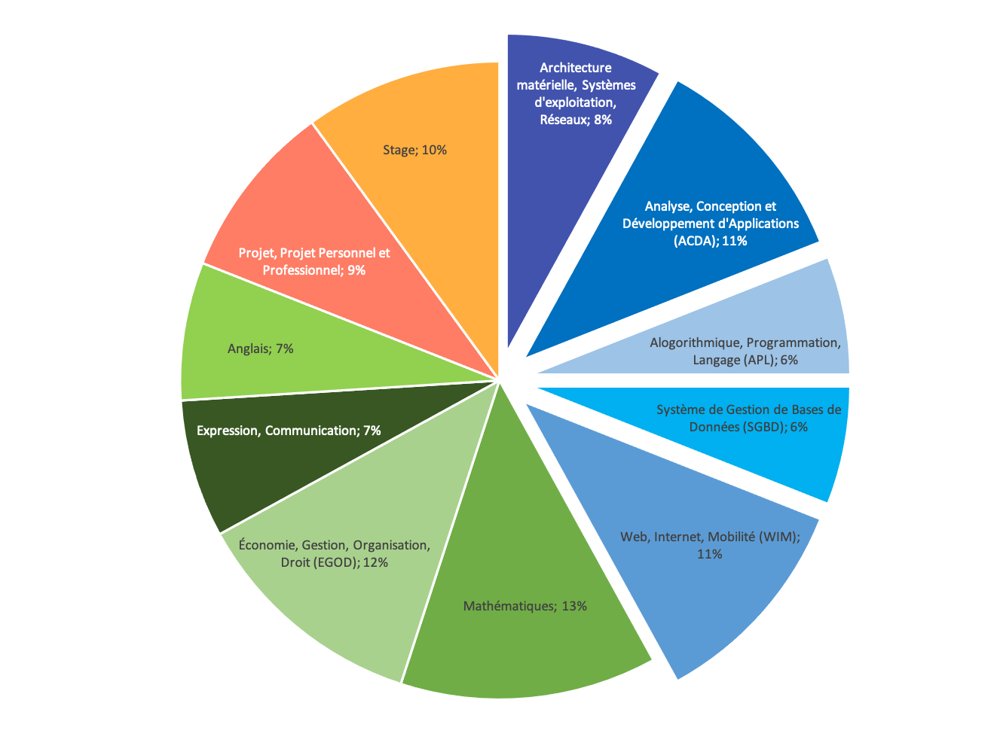
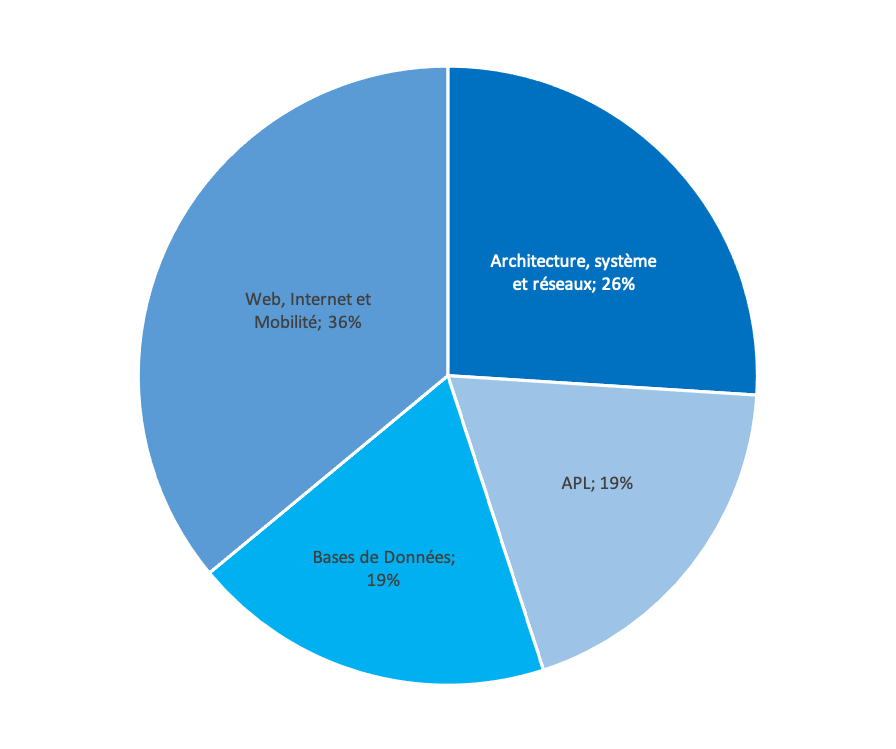
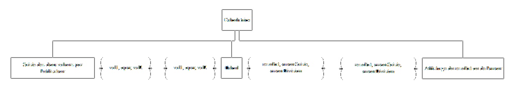

Présentation du module APL
Animée par Lucie HALLOUCHERIE, Aïnhoa LENESTOUR, Madiane GONNEL, Nathan VIERAT-GOUVET et coordonnée par Pantxika DAGORRET
Que signifie APL ?
Algorithmique - Programmation - Langages
Plan
- Présentation du module APL dans la formation
- Pourquoi algorithmique et programmation
- Qu'est-ce que l'algorithmique ?
- Qu'est-ce que la programmation ?
- Un exemple concret
Modules d'enseignement
du DUT Informatique
Unité d'Enseignement Informatique : 42%

Modules d'enseignement
du DUT Informatique
Les modules d'informatique

Organisation du module APL
5 modules entre le semestres 1 et 4
2 modules en semestre 1
- sous-module algorithmique et programmation
- sous-module structure de données
Organisation du module APL
Les activités du semestre 1
Conception d’algorithmes sur feuille en TD
Programmation des algorithmes sur PC en TP
Contrôles d’algorithme sur table
Contrôles de programmation sur PC
Volume horaire moyen hebdomadaire en semestre 1
- 2h d'amphithéâtre
- 3h de TD
- 3h de TP
Plan
- Présentation du module APL dans la formation
- Pourquoi algorithmique et programmation ?
- Qu'est-ce que l'algorithmique ?
- Qu'est-ce que la programmation ?
- Un exemple concret
Pourquoi algorithmique et programmation ?
L'algorithmique sert à réfléchir à un problème et à trouver solution indépendamment de la techonolgie.
La programmation est la mise en oeuvre d'une solution à l'aide d'une technologie particulière.
Plan
- Présentation du module APL dans la formation
- Pourquoi algorithmique et programmation ?
- Qu'est-ce que l'algorithmique ?
- Qu'est-ce que la programmation ?
- Un exemple concret
Qu'est-ce que l'algorithmique ?
- Description d'une solution réutilisable pour résoudre un problème donné
- Exemples de problèmes
- Calculer et afficher la surface d'un cercle à partir de son rayon saisi au clavier
- Calculer le prix à payer d'un produit dont le prix initial est de 56€ et la réduction de 30%
Démarche algorithmique
- Analyser le problème :
- quelles informations nécessaires ?
- quelles informations à produire, sous quelle forme ?
- quelles actions prévoir pour obtenir le résultat souhaité ?
- Si possible, généraliser le problème
- Concevoir un algorithme résolvant le problème
- modulaire et par niveaux
- basé sur des solutions type = modèles d'algorithmes
- indépendant de tout langage de programmation
- Valider l'algorithme selon des points de qualité
Modèles d'algorithmes
Qu'est-ce qu'un modèle d'algorithme ?
Solution algorithmique éprouvée et réutilisable pour répondre efficacement à un problème connu
Illustrations dans la vie courante
Un patron de vêtement
Un plan d'achitecte
Notations algorithmiques
textuelle
Si (i = 0);
Alors
ceci;
cela;
Sinon
commeCi;
commeCa;
FinSi
ou

graphiques

Qualité d'un algorithme
- Facilité
- de compréhension
- de correction
- d'évolution
- Performances
- rapidité d'exécution
- optimisation de l'occupation mémoire
- Illustrations de qualité dans la vie courante
- piles : durée de vie
- voiture : consommation d'essence
- téléphone : facilité de remplacement des pièces
Exemple d'une recette de cuisine
Liste des ingrédients
Pour le moelleux au chocolat
- 250g de chocolat noir
- 4 oeufs
- 250g de sucre
- 75g de farine
- 250g de beurre
Pour la crème anglaise
- 4 jaunes d'oeufs
- 50cl de lait
- 60g de sucre
- 1 sachet de sucre vanillé
Points de qualité
- Pas de grumeaux dans le moelleux
- Ne pas faire bouillir ni brûler la crème anglaise
I - Préparation du moelleux au chocolat
Préchauffez le four à 200°C.
Faites fondre le chocolat au bain-marie. Ajouter le beurre, mélangeez bien puis mettez la farine.
Battez les oeufs, ajoutez le sucre et mélanger quelques instants. Mélangez les deux préparations.
Versez dans un moule et enfounez pendant 45 minutes.
II - Préparation de la crème anglaise
Mélangez les jaunes d'oeufs et le sucre. Ajoutez le lait froid.
Mettez sur le feu et laissez chauffer sans ceser de remuer.
Lorsque le mélange nappe la cuillère et avant que le premier bouillon ne se forme, enlevez du feu.
Laissez refroidir.
III - Le service
Servez le moelleux froid avec la crème anglaise
Plan
- Présentation du module APL dans la formation
- Pourquoi algorithmique et programmation ?
- Qu'est-ce que l'algorithmique ?
- Qu'est-ce que la programmation ?
- Un exemple concret
Programmation et programme
Qu'est-ce que la programmation ?
Traduction d'un algorithme dans un langage de programmation
Qu'est-ce qu'un programme ?
Succession d'instructions exécutables par un ordinateur.
Démarche de programmation
- Traduire l'algorithme
- dans le langage de programmation choisi (par exemple, C++)
- en respectant strictement la solution décrite par l'algorithme : noms des informations, noms des actions
- Suivre une méthodologie de programmation :
- programmation par étapes successives, validées par une compilation
- en utilisant des outils professionnels (débogueur, mise en forme automatique du code)
- Vérifier que le programme satisfait aux critères de qualité
Qualité d'un programme
- Lisibilité du code
- Respect des conventions de nommage
- Code commenté pour aider le prochain programmeur à faire le lien entre le code et algorithme correspondant
- Code indenté
- Réutilisabilité
- Pratique de la modularité : écriture de sous-programmes, de bibliothèques
- Réutilisation d'un même sous-programme ou d'une même bibliothèque dans plusieurs programmes différents
Plan
- Présentation du module APL dans la formation
- Pourquoi algorithmique et programmation ?
- Qu'est-ce que l'algorithmique ?
- Qu'est-ce que la programmation ?
- Un exemple concret
Exercice : calculette simple
Problème à résoudre
Etant donnés val1, val2 deux entiers, et un opérateur oper, calcule le résultat de l'opération.
On considère que
- val1, val2 et oper sont saisis au clavier
- val1 et val2 sont des nombres entiers
- les opérations autorisées sont : +, -, *, /
Exercice : calculette simple
Comportement attendu
- le programme calcule le résultat et l'affiche
Cas d'erreur
- si l'opérateur est / et division par 0 : message d'erreur et s'arrête
- si l'opérateur n'est pas + - / * : message d'erreur et s'arrête
Algorithme

| Nom |
Type |
Signification |
| val1 |
nombre entier |
première valeur |
| val2 |
nombre entier |
deuxième valeur |
| oper |
caractère |
opération à effectuer |
| resultat |
nombre à virgule |
résultat obtenu de l'opération |
| erreurDivision |
booléen |
erreur de division par 0 |
| erreurSaisie |
booléen |
erreur de saisie |
Programme
conforme à l'algorithme et aux critères de qualité
Programme
fonctionnel mais non conforme aux critères de qualité
Merci de votre attention !